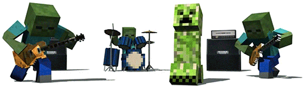

|

Welcome to VIP Gaming Design Company! |
Our Goal Want to see our Privacy Policy? Click here! From visual storytelling to game audio to level design to motion capture, VIP simulates the flow of a professional studio to prepare you to be an active part of any game development team. Employees at VIP have the advantage of living and creating in Spring Creek, Nevada. Along with strong film, TV, and animation industries,Spring Creek is a world center of game development with dozens of studios and companies based in this beautiful and cosmopolitan city. That means that VIP is industry-current and can provide students with the opportunity to present their final playable games to an audience of industry reps and recruiters, providing a chance to demonstrate their skills and make vital professional contacts. The proof is in the results. Since the Game Design company's inception in 2004,designers have gone on to work for companies around the world, on many of the industry's most celebrated games. Requirements for a career at VIP Senior Game Developer: Here at VIP, we’re working flat out to scientifically investigate what it is that makes the best learning experience. By using real-time data to drive an evidence based approach to education, we’re developing an extraordinary new technology for the classroom that is redefining the limits of what young people can achieve and is helping us work out what works (and what doesn’t) in the field of education. Imagine a classroom in which every student receives an individualised learning experience. Imagine a classroom where we know what motivates each student. Imagine a classroom in which a teacher has detailed insight into each child’s strengths and struggles. We’re looking for people with a deep passion for education and an interest in how motivation plays its part, as well as a belief in the power of technology to improve it. Things move fast at Sparx so we need people who assume excellence is a given and who are ambitious, creative, and effortlessly knowledgeable in their field. People who want a challenge; people who want to make a difference. JOB DESCRIPTION As a Senior Games Developer at VIP, you’ll be the one that makes work look like play. Your one mission is to make learning as awesome, fun and addictive as possible. You’ll use your flair for making great games to get young people motivated and loving learning and, as a result, truly transform their futures. You’ll be responsible for designing, programming and testing high quality games to run on a tablet platform (we currently work on iPads) for a variety of subjects. Your games will need to get under the skin of what makes young people tick and, working closely with the expert team around you, uncover exactly what’s going to help them get over each obstacle in understanding that they face. Things happen at breakneck speed at VIP and you’ll have the freedom to do whatever it takes to get from A to B. There are no hierarchies here, and no-one micro-managing how you work. We have one shared ambition: to improve educational outcomes for all. |
Advertisement: |
ABOUT YOU You’ve got a brilliant and established technical background, that’s a given. You’ll have been playing games since a young age and trying to develop better ones since you worked out where the ‘P’ goes in programming. What we’re really interested in is your imagination, human insight, energy and desire to use gaming to really make a difference to people’s lives. You are intrigued by what it is about a game that keeps people tuned in and coming back for more. You’ve studied and analysed all the best games and have an encyclopedic knowledge of how they were developed and how technology has evolved to enhance gaming. You have experience in the industry and a good few years of working on games development under your belt. Regardless of whether you have been working on your own previously, or with a group of people, you know you’ll find a home in our dynamic and eclectic team. You’ll be obsessed with reaching perfection and finding simple but elegant solutions to highly complex problems. Things are always changing at VIP so we need people who can keep up. You don’t have to be a specialist in education or a particular school subject – you just need to know how to make a beautiful game. OUR TEAM We’re about living life, not putting it on hold. Our generous benefits include substantial holiday leave and the chance to join our share scheme and company pension once you’ve completed your probationary period. We also have a range of on-site facilities for all employees to use free of charge. There’s a netball court and a five-a-side football pitch just outside, an on-site gym, a running track and pool table, a 2012 Olympic table tennis table and a café serving free, delicious and organic food. Plus, we’re constantly organizing events and activities to support our charities, and to socialise. And while we’re serious about our work, we want to have fun while we do it! APPLY NOW We’re building a team of the brightest and best and are always looking for exceptional people to join us. If this sounds like the role for you, what are you waiting for? |
|  |
Home | Contact Us | Projects | FAQ | Famous Games ©Caitlin Bero 2014 |